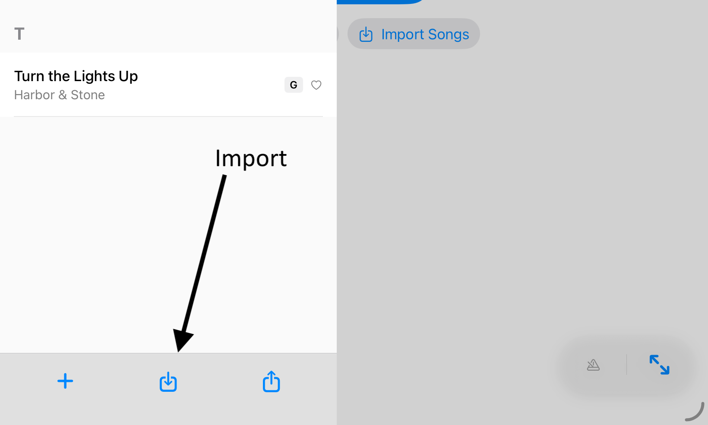
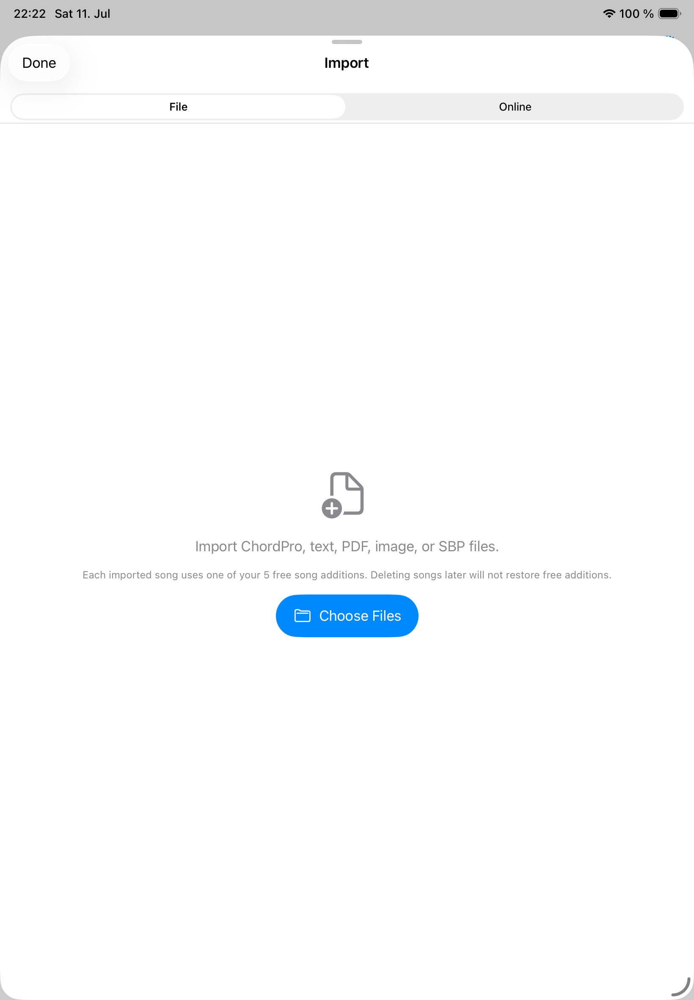
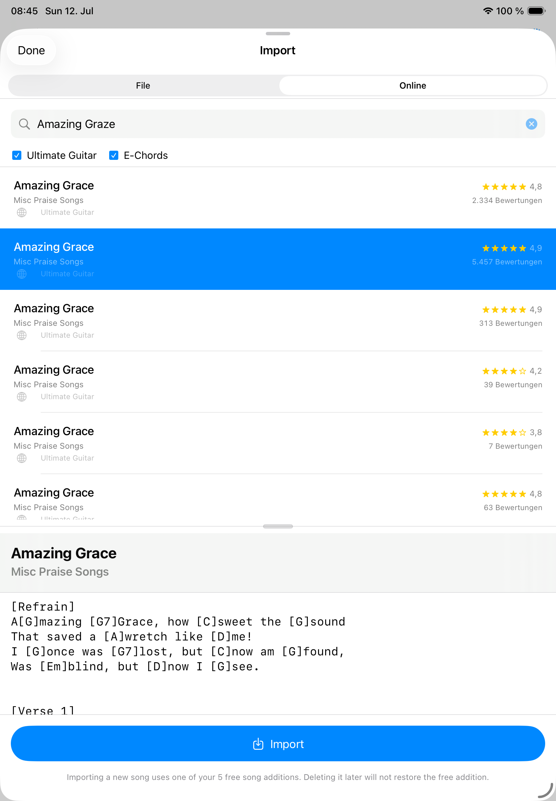

Files and search
Importing Songs
Songivo imports local files and online search results into the currently selected library.
Check the library context before importing. A song imported into My Library is personal; a song imported into a band library belongs to that shared band context.

Import from files
- Open Import Songs from the start screen, or library panel.
- Choose the File tab.
- Select one or more supported files.
- Review any preview, PDF processing, or duplicate prompt shown by Songivo.
- Save the imported songs and then adjust metadata such as key, BPM, duration, tags, and song number.

Import from online search
- Search by title or artist using the Online tab.
- Use provider toggles to search the sources you actually want.
- Preview the result before importing so you can avoid a bad chart or a duplicate.
- Clean up metadata after import; web sources often need title, key, BPM, or formatting review.

Free song additions
Creating or importing a song uses one free song addition until unlimited song additions are unlocked. Deleting a song later does not restore that free addition, so preview imports before saving.